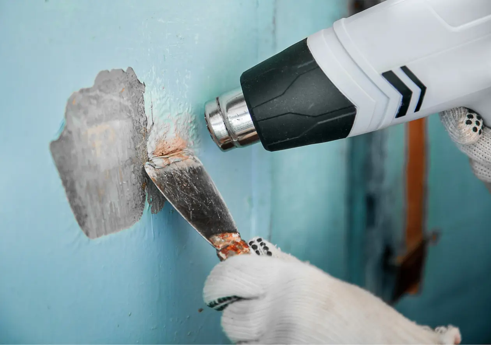
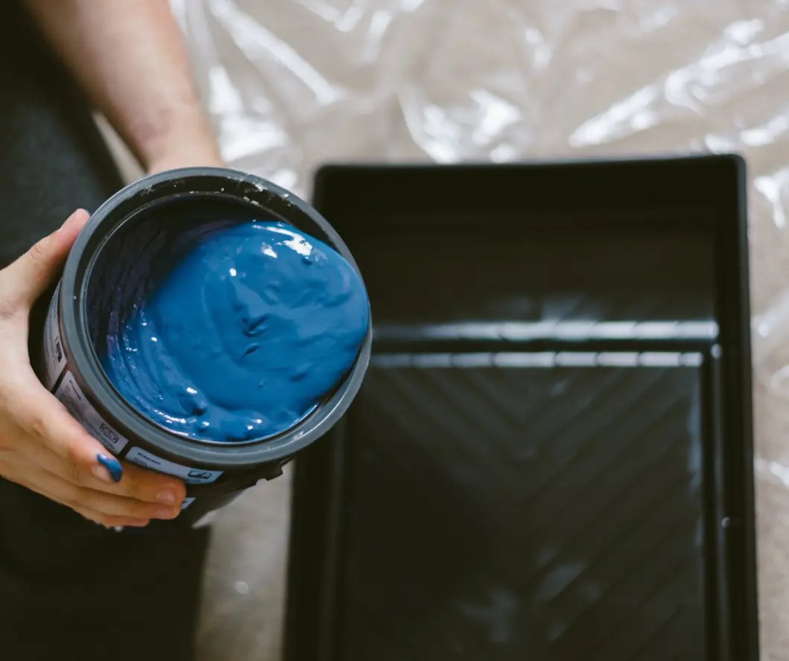
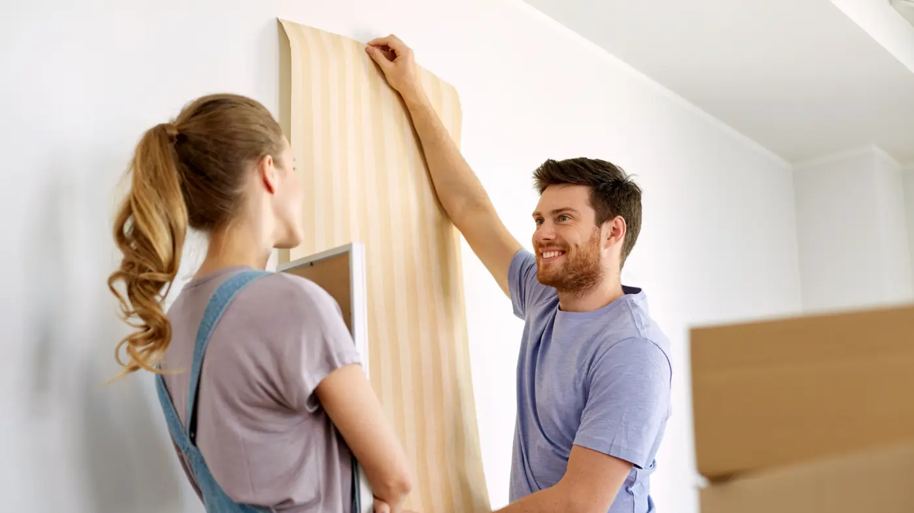
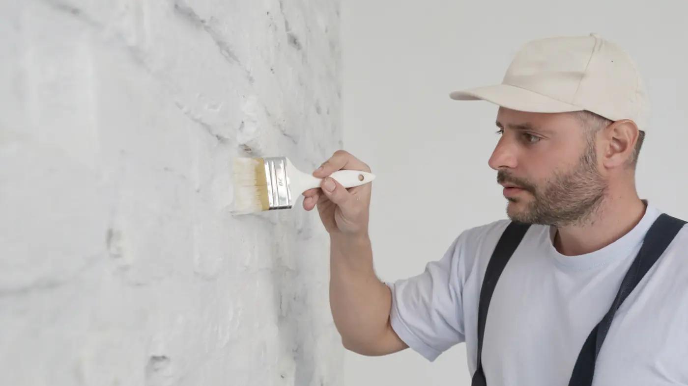
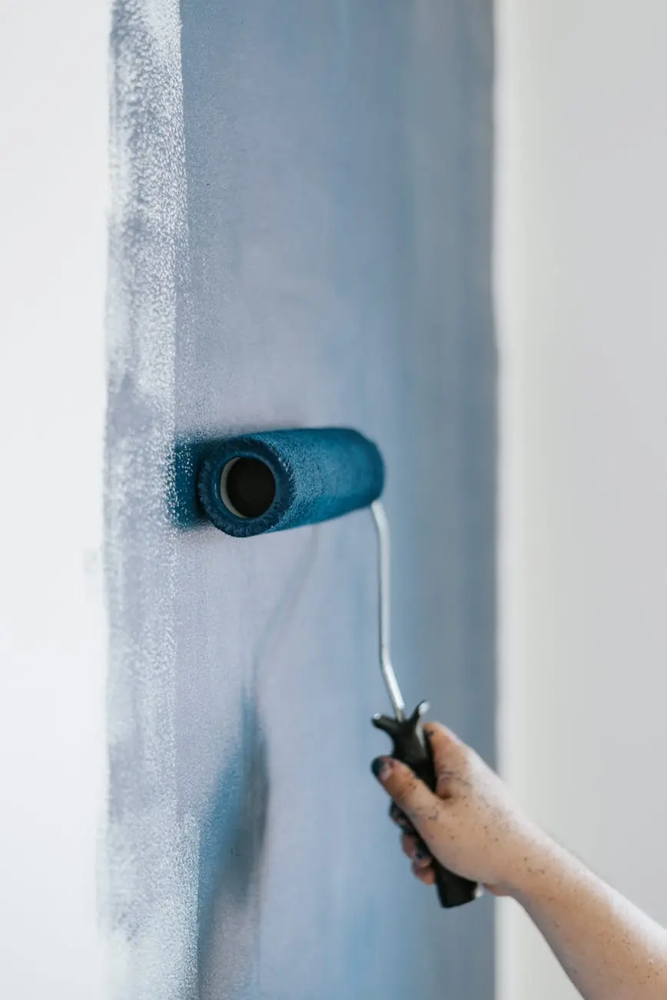

Oude verf verwijderen, hoe doe je dat?
Met een likje verf tover je oude ruimtes in een mum van tijd om. Maar eerst moet die oude verf verwijderd worden. Hoe begin je daaraan?
Lees meer
Een vochtige ruimte schilderen: enkele tips en tricks
Het is niet evident om de juiste schilderkeuzes te maken voor een vochtige ruimte. Acrylverf en enkele andere verfsoorten zijn daarvoor geschikt. Lees hier waarom.
Lees meer
Gyproc schilderen, een stappenplan!
Gyproc-platen zijn snel en makkelijk te schilderen, maar er zijn toch enkele aandachtspunten. Hierbij een eenvoudig stappenplan.
Lees meer
Interieurtip: magnetische en schrijfondergronden
Geef je interieur een creatief tintje met een magnetische ondergrond, schoolbord en/of whiteboardverf. Een duurzame en creatieve oplossing, waar je jaren van geniet.
Lees meer
Jarenlang genot dankzij de troeven van kwaliteitsverf
Je bent van plan om jouw woning op te knappen met een nieuw likje verf en koopt een pot verf in een doe-het-zelfzaak. Die verf is vaak goedkoper dan bij een gespecialiseerde…
Lees meer
Schilder je gevel en geef je huis een nieuwe look
Dankzij een laagje verf je buitenmuren een frisse look geven? Het kan! Toch zijn er enkele zaken waar je op moet letten. SDAD geeft je enkele tips!
Lees meer
MDF schilderen: hoe doe je dat?
MDF-platen zijn geschikt voor allerlei interieurprojecten. In 'no time' maak je bovendien komaf met de saaie kleur. Vrolijk je platen op met deze tips!
Lees meer
Behangen, zo begin je eraan!
Goed behangen is geen koud kunstje. Je hebt kwalitatief materiaal nodig en moet best een handige harry zijn. We geven je alvast tips om zelf aan de slag te gaan.
Lees meer
Je bakstenen muur schilderen? Het kan!
Een bakstenen binnen- of buitenmuur kan je eenvoudig schilderen, mits de juiste voorbereidingen en kwaliteitsvol materiaal. Ontdek in deze blog hoe je eraan begint!
Lees meer
Naadloos fotobehang is hip en trendy
De sfeer in huis of bedrijfspand volledig naar een hoger en stijlvoller niveau tillen? Kies dan voor naadloos fotobehang!
Lees meer
Aluminium schrijnwerk schilderen, kan dat?
Kan je aluminium schrijnwerk schilderen en hoe begin je eraan? Ja, het kan zeker! SDAD geeft je tips en professionele uitleg over hoe je aluminiumprofielen schildert.
Lees meer
Netjes afkitten?
Naden, spleten en de overgang tussen de muur en het plafond, kit je die voor of na het schilderen? In deze blog geven we meer uitleg over kitten.
Lees meer
Welke kleur kies je best?
De juiste kleur kiezen voor de woonkamer, slaapkamer of gang is niet eenvoudig. De kleurenpsychologie en onze handige tips kunnen je alvast op weg helpen!
Lees meer
Binnen- en buitendeuren schilderen in 5 stappen
Binnen- en buitendeuren dragen veel bij aan het globale uitzicht van je woning. Af en toe kunnen ze dan ook een nieuwe laag verf gebruiken. Of misschien heb je gewoon zin in een…
Lees meer
5 tips om afplaktape te gebruiken
Schilderen betekent vaak ook mooie lijnen creëren en daarvoor heb je afplaktape of schilderstape nodig. Omdat er zoveel soorten bestaan, geven we je graag 5 tips.
Lees meer
Heeft je tuinhuis nood aan een stevige lik verf?
Kan je houten tuinhuis een nieuwe lik verf gebruiken? We vertellen je hoe je hout voorbereidt op schilderwerken en hoe je behandeld hout kunt verven.
Lees meer
Trappenhal schilderen, hoe begin je eraan?
Een trappenhal of inkomhal schilderen brengt enkele uitdagingen met zich mee, zeker als niet alle plekjes even goed bereikbaar zijn. Zo pak je het aan.
Lees meer
Keukens en keukenkasten verven doe je zo!
Is je keuken toe aan een opknapbeurt? Schilder dan je keukenkasten of volledige keuken. We geven je enkele praktische tips.
Lees meer
Kan je pvc schilderen?
Raamkozijnen of een garagepoort die verkleurd zijn door de zon? Zowel binnen- als buitenschrijnwerk in pvc kan je schilderen.
Lees meer
De voordelen van vliesbehang en waarom je het best laat hangen bij renovatiewerken!
Vliesbehang is een snelle en makkelijke oplossing om je muren te renoveren en dient als ondergrond voor de verflaag.
Lees meer
Kan ik mijn faiences of wandtegels schilderen?
Ja! Als je de stijl van je badkamer of keuken beu bent en graag de ouderwetse faiences achter een laagje verf verbergt, dan is dat perfect mogelijk.
Lees meer
Een plafond schilderen in 8 stappen
Het schilderen van een plafond kan lastiger zijn dan andere schilderwerken omdat je de hele tijd boven je hoofd moet werken, zeker als het plafond eerst nog eens grondig gereinigd…
Lees meer
Hoe een muur verven zonder strepen?
Niets zo vervelend als veel tijd, moeite en geld in jouw binnenschilderwerken te investeren en dan te zien dat er verfstrepen op je muren, plafond, deurlijsten of zelfs gevel te…
Lees meer
Hoe kan ik mijn muren ontvetten voor het schilderen?
Voordat je aan de slag kunt met de verfborstel, moeten de muren eerst gereinigd en ontvet worden. In deze blog leggen we uit hoe je muren kunt ontvetten voor het schilderen, waar…
Lees meer
3 tips om uw trap te schilderen
Een trap heeft heel wat te verduren en kan na een aantal jaren sporen van slijtage vertonen. Een frisse lik verf of grondige behandeling van jouw trap kan dan wonderen doen. We…
Lees meer
Wanneer is het tijd voor een nieuwe lik verf?
Na verloop van tijd is je schilderwerk toe aan een nieuwe lik verf. Hoe weet je juist wanneer dit is?
Lees meer
Laat je woning kaleien door een professional
Kaleien is tegenwoordig een populaire techniek om je gevel een nieuwe uitstraling te geven.
Lees meerEen mooi resultaat begint met een goed gesprek.
Tijdens een vrijblijvend plaatsbezoek luisteren we naar uw wensen, geven we professioneel advies en bekijken we samen de mogelijkheden voor uw schilderwerken of interieurafwerking.
Na het vrijblijvende plaatsbezoek ontvangt u een duidelijke offerte en planning. Liever eerst een vraag stellen? Contacteer ons.